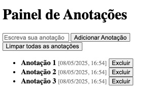
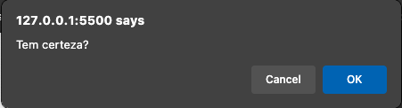
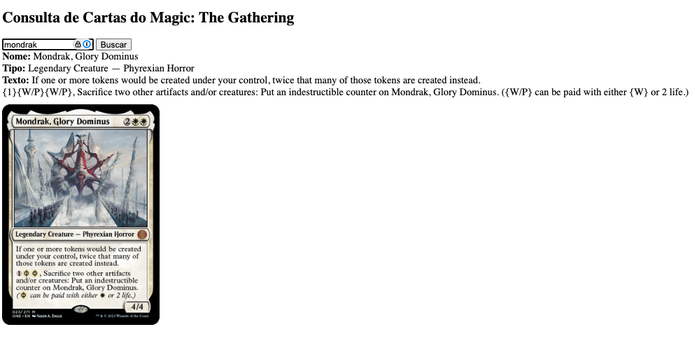

Checkpoint #3 – Web Development
Projeto Final
⚠️ Atenção: Leia e siga todas as instruções para não ter
pontos descontados.
📌 Instruções Gerais
- Todo o conteúdo deve estar na
main branch.
-
Crie um repositório privado com o nome
checkpoint-3-webdev-nome-da-turma.
Ex:
checkpoint-3-webdev-1ESS
-
Adicione o e-mail cintra.70@gmail.com como colaborador.
-
Se for em dupla ou trio, apenas um cria e adiciona os colegas como
colaboradores.
- Clone o repositório na sua máquina local.
-
Crie o arquivo
participantes.md com o nome de todos os
integrantes.
Obrigatório mesmo para trabalhos individuais – 1 ponto será
descontado se não houver.
-
Crie apenas dois arquivos principais:
🛠️ O Que Deve Ser Feito
Tema: Painel de Anotações + Consulta de Cartas do Magic:
The Gathering
-
1. Painel de Anotações

-
Crie um formulário com um
input e um
botão para adicionar novas anotações.
-
Exiba a lista de anotações que já foram
adicionadas.
-
Cada anotação deve ter um
botão de exclusão individual.
-
As anotações devem mostrar a data e hora,
preenchidas automaticamente via JavaScript.
-
Salve as anotações no
localStorage e restaure ao
recarregar a página.
-
Crie um botão “Limpar Todas” para remover tudo do
DOM e do
localStorage.
⚠️ Execute a limpeza
apenas após uma confirmação do usuário.

-
2. Consulta de Cartas do Magic

-
Crie um campo de busca para digitar o nome da carta
(em inglês).
-
Use
fetch para consultar a
API pública.
-
Exiba as informações da carta:
nome, tipo,
texto e imagem.
Se não
houver imagem, exiba a imagem padrão abaixo (faça o download e
salve como assets/imagem-padrao.jpg no seu projeto).
-
Mostre uma mensagem de erro se a carta não for
encontrada ou houver falha na requisição.
💡 Algumas cartas que você pode usar para testar:
-
Black Lotus – Uma das cartas mais famosas e
valiosas do jogo.
-
The One Ring – Artefato lendário poderoso, muito
procurado por colecionadores e jogadores.
-
Sheoldred, o Apocalipse – Uma das criaturas pretas
mais impactantes dos últimos tempos.
-
Elspeth, sun's champion – Planeswalker que
representa bem os decks brancos agressivos.
-
Giada, Font of Hope – Carta essencial em decks de
anjos, com forte sinergia tribal.
-
Ugin, the Spirit Dragon – Planeswalker incolor
extremamente poderoso e versátil.
📦 Exemplo de chamada à API:
const resp = await fetch(
`https://api.magicthegathering.io/v1/cards?name=${encodeURIComponent(nome)}`
);
🚫 Regras Importantes
- Não copie o exemplo pronto da apostila.
-
Não é necessário design avançado, foque no funcionamento e clareza do
código.
-
Comente os blocos no
script.js explicando cada
funcionalidade.
-
Faça commits separados e nomeados conforme a funcionalidade (ex: “cria
anotação”).
🔀 Fluxo Obrigatório de Branches
-
Para este projeto, cada funcionalidade deve ser desenvolvida em sua
própria branch. Isso ajuda a manter o código organizado, evita conflitos
e permite que cada parte do projeto seja revisada separadamente.
-
Crie a branch
feature/anotacoes exclusivamente para
desenvolver o Painel de Anotações.
-
Crie a branch
feature/consulta-magic exclusivamente para
desenvolver a Consulta de Cartas do Magic.
-
Importante: Não faça nenhuma alteração diretamente na
branch
main. Toda modificação deve passar pelo fluxo de
Pull Request.
-
Após finalizar o desenvolvimento em cada branch, siga este fluxo:
-
✅ Crie um Pull Request de
feature/anotacoes →
main
(após testar e revisar a funcionalidade do Painel de Anotações).
- ✅ Faça o merge do Pull Request no GitHub.
-
✅ Depois, crie um Pull Request de
feature/consulta-magic → main
(após testar e revisar a funcionalidade de Consulta de Cartas).
- ✅ Faça o merge desse segundo Pull Request.
-
🛑 Atenção: Esse fluxo faz parte da avaliação. Se você
fizer alterações diretamente na
main sem seguir esse
processo, seu projeto poderá ser penalizado.
✅ Checklist de Avaliação
- Anotações com data/hora e formulário funcional
- Exclusão individual de anotações
- Persistência no
localStorage
- Botão para limpar todas as anotações
- Busca de carta com
fetch
- Exibição de nome, tipo, texto, imagem (ou erro)
- Comentários explicativos no código
- Commits separados e descritivos
- Arquivo
participantes.md presente
- Uso correto das branches e Pull Requests
📤 Como Entregar
- Faça commits separados e coerentes.
- Dê push para o repositório privado no GitHub.
- Adicione o professor como colaborador.
(cintra.70@gmail.com).
- Envie o link via Teams com acesso liberado.
Boa sorte e criatividade no seu projeto!
{kind=link}